How I Built a Twitter Bot using Python and AWS Lambda
March 17, 2021
Web Development
Python
AWS
Lambda
Cloud
Serverless
Last year I built a (very silly) Twitter bot to track the name changes of Nahim (@nah_im_abdulla). I hosted it locally for the best part of the year but decided to move it to the cloud for reliability. If my computer stops working, the bot goes down but that is less likely with AWS.
Create a Twitter account and app
First, I signed up for Twitter using the username NahimName for the bot. Sign Up here: https://twitter.com/signup
Then I applied for a developer account access. I had to enter a few details about how I plan to use the Twitter API.
Follow the instructions here: https://dev.to/sumedhpatkar/beginners-guide-how-to-apply-for-a-twitter-developer-account-1kh7 It takes a few hours to get approved.
Next I needed to create an app so that I could programmatically access the Twitter account. For that go to the Developer Dashboard and follow these steps
Name your project
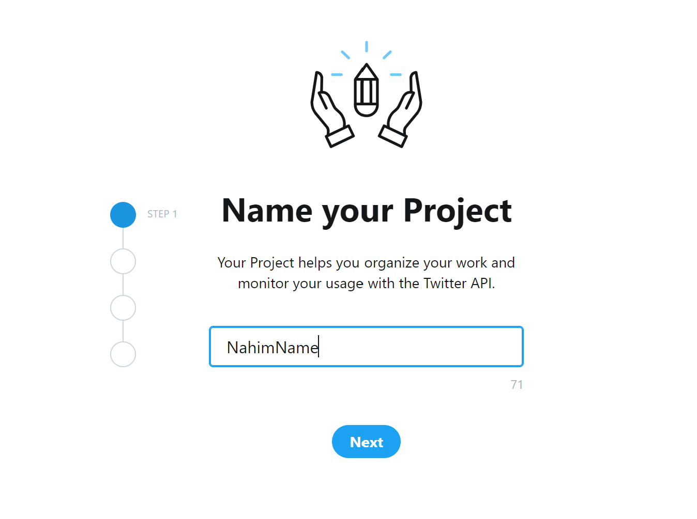
What is this project about
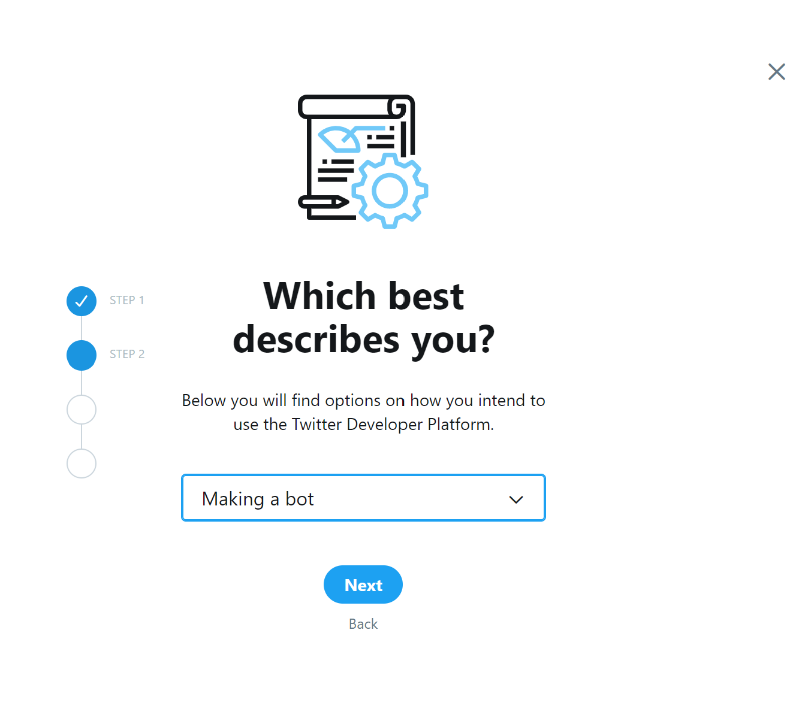
Write a description
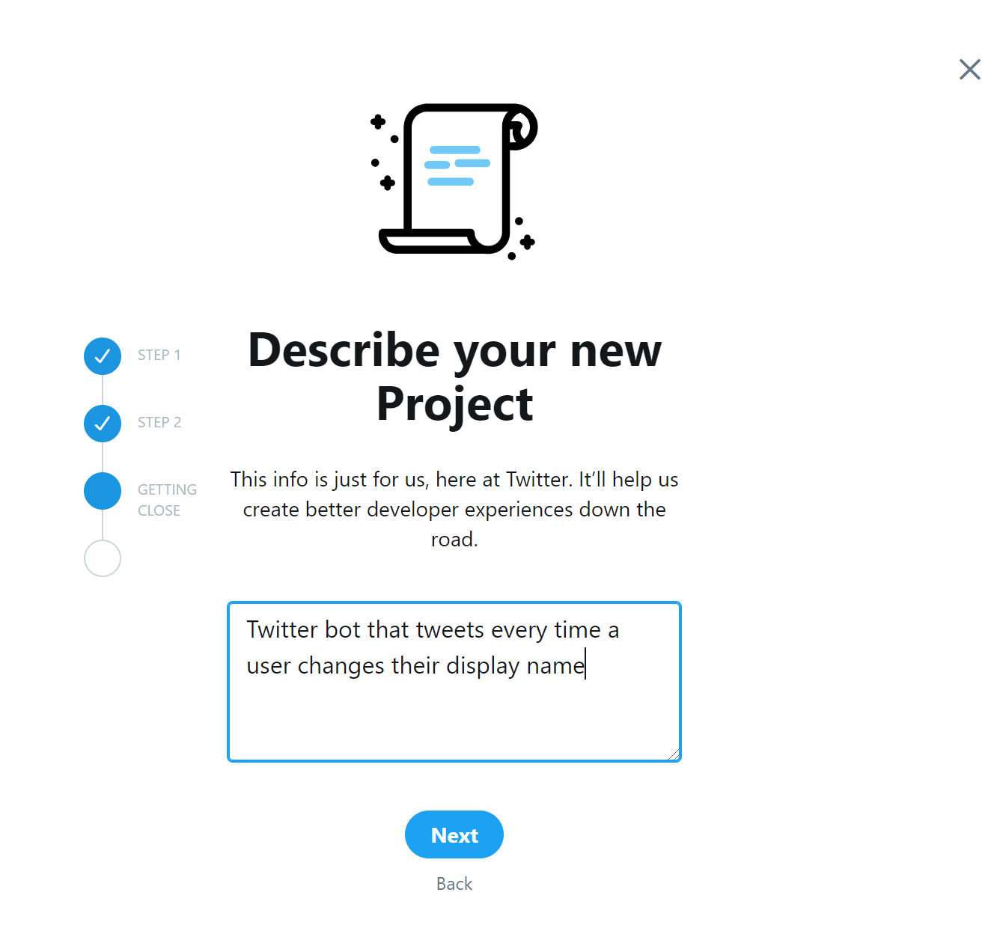
Add a new app
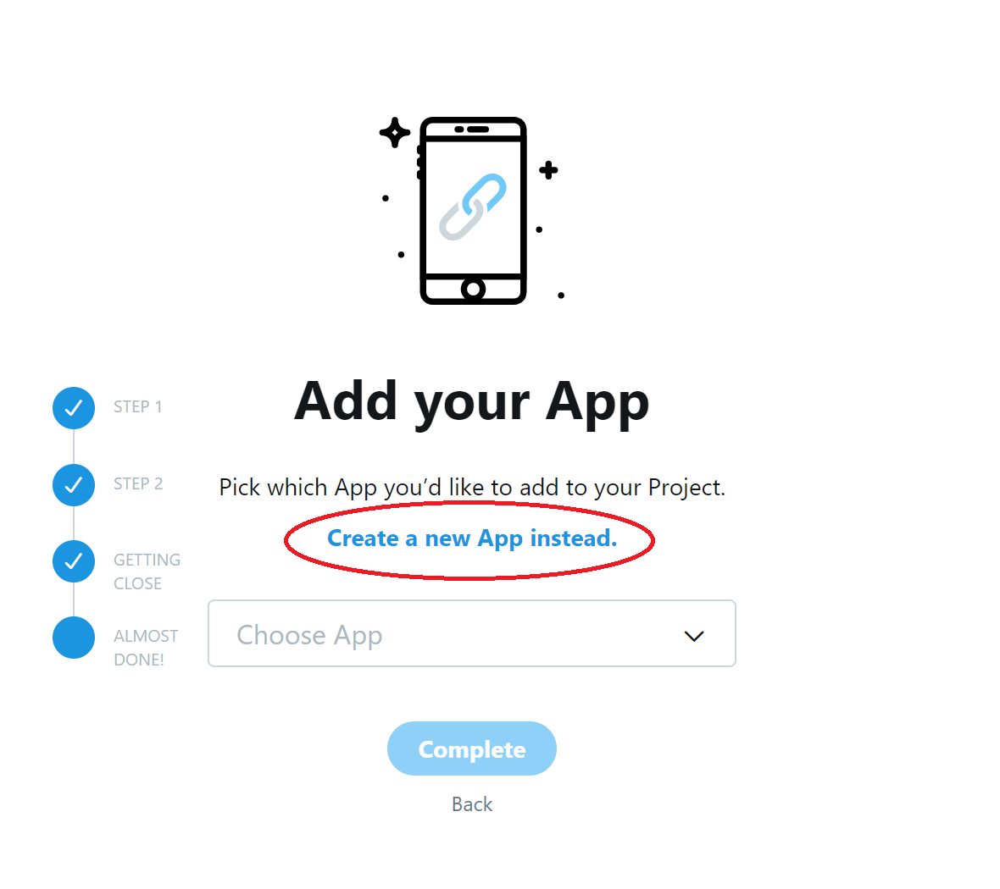
Name the app
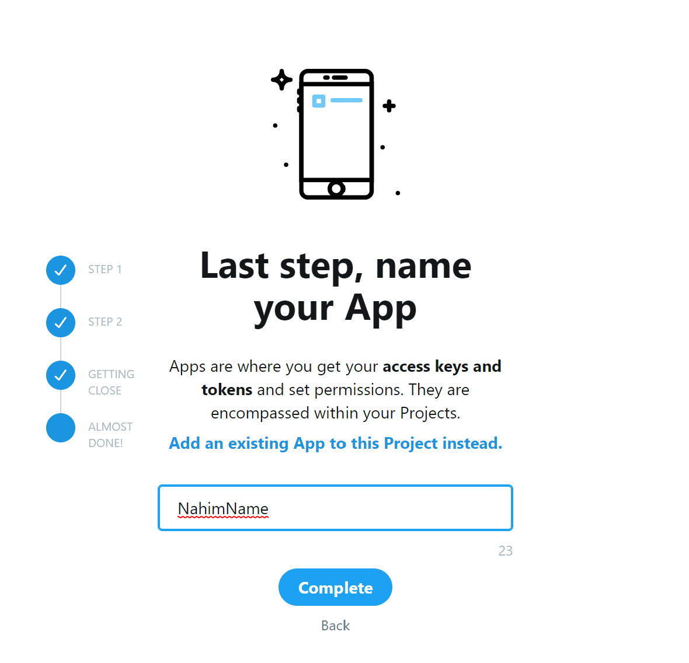
Generate Keys
From the Keys and Tokens page, I generated API key & secret and Access token & secret.
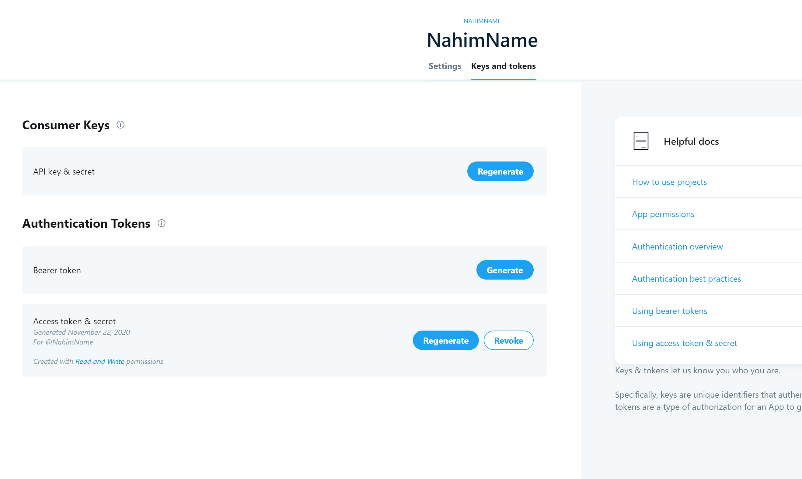
Then copied these details as soon as they were generated into a file twittercreds.py which looked like this:
api_key = "QfNCeooJRvcJ4NdMAf3i5eWsq"
api_secret = "BFNkLJpDjO3CLs1xwO6JKF84YJS7vKo1zOwnqUjvkKLAJfsT1B"
access_token = "1226083992312647681-eMyxZgnn840usQSdKztiwKupMRM8Xr"
access_secret = "IRWwsNUWoW3FAu4LketeCsc6dJ7u3OCJw1vdw2G1YgktE"
Note: Don’t try these exact values to access my bot. I’ve regenerated these keys so they won’t work :P
These variables will be used to authenticate (i.e. login to) the Twitter account I created earlier (@NahimName)
Python script
Never used Python? I recommend installing Anaconda. Instructions for Windows: https://docs.anaconda.com/anaconda/install/windows/
I used a Python library called tweepy to access the Twitter API.
pip install -t . tweepy
This installs tweepy in the directory where I run the command. This is useful later when I deploy the script to AWS.
The simple idea behind the script is this:
- Login to Twitter
- Check the last tweeted name by the bot
- Check for Nahim’s current name
- If the current name is different, tweet the new name
Here’s the short script in action.
Login to twitter
import tweepy
from twittercreds import *
def login_twitter():
auth = tweepy.OAuthHandler(api_key, api_secret)
auth.set_access_token(access_token, access_secret)
api = tweepy.API(auth)
return api
Check the last tweeted name by the bot
def get_old_name(api):
tweets = api.user_timeline(screen_name='NahimName', count=1, include_rts = False, tweet_mode = 'extended')
old_name = tweets[0].full_text.encode('utf-8')
return old_name
Sidenote: Python uses ASCII coding for strings but it doesn’t include all the characters used on twitter like emojis or characters in languages other than English. Hence, the tweet received is encoded into bytes using utf-8 which has a larger list of characters.
Check for Nahim’s current name
def get_current_name(api):
user_id = 2467643810 # Nahim's twitter user ID. Unique for every Twitter user
user = api.get_user(user_id)
current_name = user.name.encode('utf-8')
return current_name
If the current name is different, tweet the new name
def lambda_handler(event, context):
api = login_twitter()
old_name = get_old_name(api)
current_name = get_current_name(api)
if current_name != old_name:
api.update_status(current_name.decode())
Since the original tweet was encoded, it needs to be decoded from bytes into a string before tweeting. The function is named so because that is the default function AWS looks for in Lambda. This can be changed in configuration later but the variables event and context need to be passed to the function. All of the above code is in one file named lambda_handler.py for the same reason. i.e. it is the file that AWS looks for by default.
This works only if there already is a tweet to check the previous name. This is easily done by adding the first tweet manually. 😛
Deploying to AWS
Create AWS account: https://www.tutorialspoint.com/amazon_web_services/amazon_web_services_account.htm
I used AWS lambda to run the script in the cloud instead of on my computer. To do this, I zipped the contents of the folder where the script was written. This includes all the files such as twittercreds.py, lambda_function.py and all the files that were downloaded when I installed tweepy. So when this is uploaded to AWS, all the necessary dependencies are available in one place.
Create a Lambda function in AWS
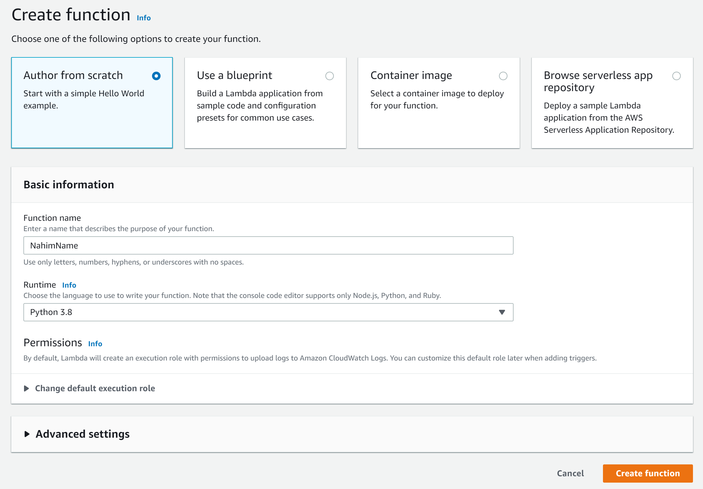
Upload the contents of the zipped folder to the Lambda Function.
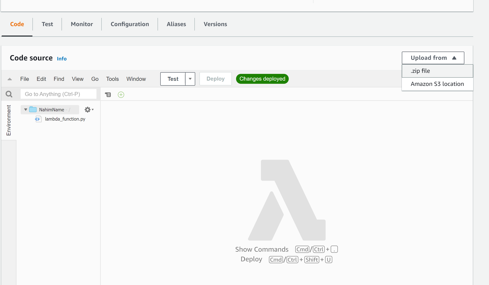
Create Rule In EventBridge
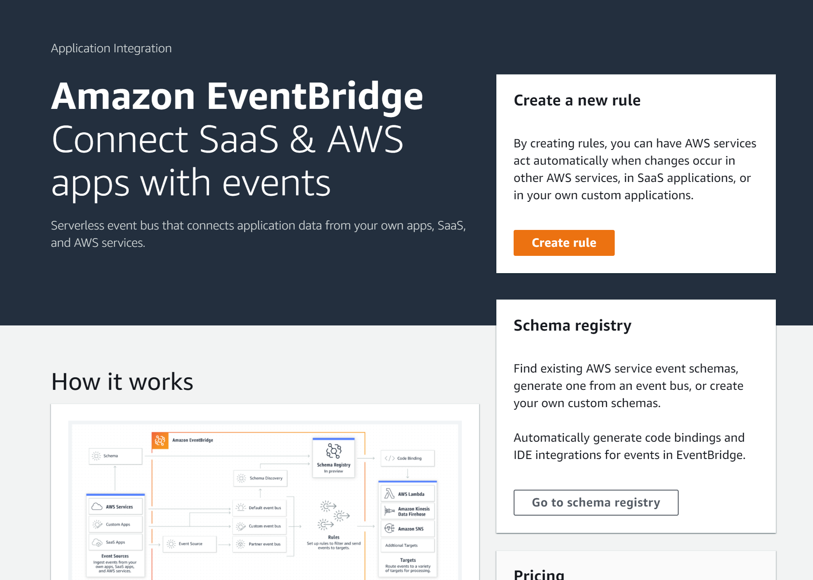
Define Rule and Target
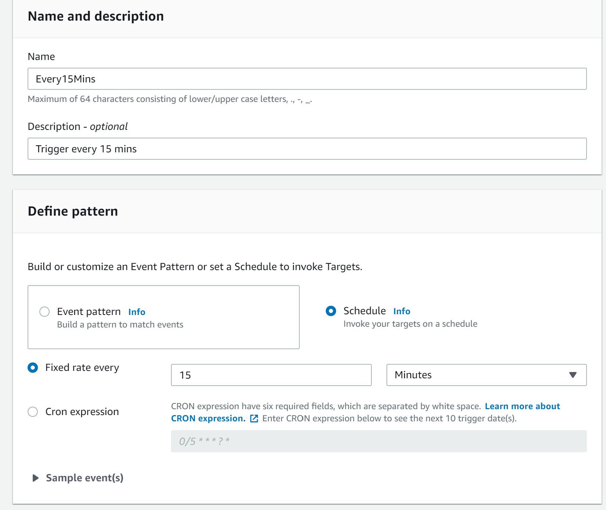 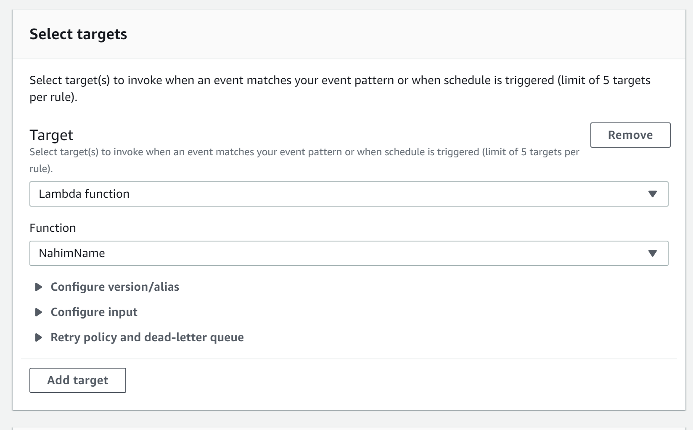
Here, I used EventBridge to trigger the function at regular intervals (15 minutes)
That’s it. ~!
You can see the code here: https://github.com/pdwarkanath/nahim-name/blob/master/lambda_function.py

Hi, I’m Dwarkanath Prabhu! I’m a web developer, currently working at CMS, Inc.